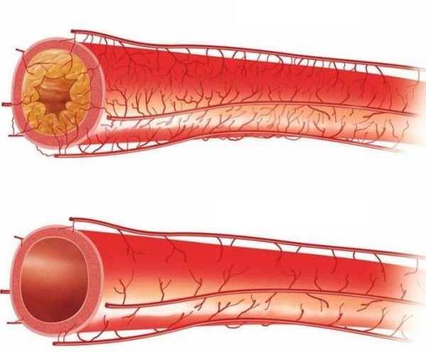

reduce y estabiliza la presión arterial, reduce la frecuencia cardíaca
¡Se acabó la época de la hipertensión! Un tratamiento innovador de un científico peruano reduce el riesgo de infarto, accidente cerebrovascular y garantiza un 100% de salud vascular.
¿Acabará el nuevo tratamiento con el negocio de los fabricantes de pastillas para la hipertensión? Los especialistas más prestigiosos en cardiología no tienen dudas de que será así. Gracias a la fórmula natural innovadora elaborada por los peruanos, ha tenido lugar el tan esperado avance en la lucha contra la hipertensión.




Ya más de 14 mil pacientes que se sometieron a este tratamiento se deshicieron de la hipertensión y recuperaron por completo su salud. Como resultado, dejaron de tomar pastillas para reducir la presión arterial, gastar fortunas enteras en terapias y sufrir largas colas para ver a los especialistas. Este tratamiento ha ayudado incluso a aquellos pacientes que han estado luchando con esta enfermedad durante años. ¿Cómo es posible?
El profesor Luis Recio (especialista en biología molecular) decidió curar la hipertensión de su madre. Quería aliviarla de la presión arterial alta, el dolor de cabeza constante, los mareos, la debilidad y prevenir un ataque cardíaco y un derrame cerebral. ¡Así comenzó la revolución en el tratamiento de la hipertensión! Después de un año de ensayos clínicos en profundidad, el profesor desarrolló una fórmula macromolecular, natural, seguro y fácil de usar que produce un efecto complejo sobre el estado de todo el organismo. Normaliza los indicadores de presión arterial a la norma de edad, mejora la circulación sanguínea, limpia los vasos sanguíneos y los hace más fuertes y elásticos. Por lo tanto, recupera por completo la salud física.
El profesor Luis Recio (especialista en biología molecular)
Las revistas médicas profesionales ya han llamado este tratamiento "un avance revolucionario en el tratamiento de las enfermedades cardiovasculares". Además, el profesorha recibido la nominación al Premio Nobel por su éxito. Gracias a la acción de su fórmula, incluso las personas con el grado más severo de hipertensión han bajado su presión arterial a la norma de edad y han recuperado por completo su salud y se han despedido de los medicamentos que destruyen el hígado.
"Los métodos de tratamiento de la hipertensión conocidos hasta ahora son una pérdida de tiempo y dinero". ¿Qué razones hay para pensar así?
Estas palabras las confirman más de 14 mil usuarios satisfechos de la fórmula macromolecular para regenerar las articulaciones y la columna, quienes ya se han deshecho de la presión arterial alta y recuperado el 100% de su salud. Por este motivo, decidimos analizar detenidamente los métodos de tratamiento de la hipertensión conocidos hasta el momento, para comprobar cuáles son sus desventajas y a qué tienen que enfrentarse las personas que toman medicamentos todos los días para bajar su presión arterial. Aquí están las conclusiones:
El ejercicio solo empeora el problema.
Hay muchos grupos de ejercicios diseñados para reducir la presión arterial y deben realizarse durante una hora todos los días. No todo el mundo tiene la fuerza, el tiempo y la salud para hacer ejercicio vigoroso a diario. Lo peor de todo es que un pequeño error al hacer los ejercicios amenaza con causar lesiones e incluso más daño a la salud.
Tomar pastillas todo el tiempo tiene muchos efectos secundarios.Los medicamentos antihipertensivos pueden provocar efectos secundarios peligrosos, como mareos y fatiga, que provocan caídas y lesiones. Los adultos mayores tienen un mayor riesgo de sufrir efectos secundarios de los tratamientos farmacológicos.
Es una pérdida de tiempo valioso y mucho dinero.La selección de un fármaco para alta presión es un proceso largo, difícil y costoso. Y la admisión posterior se lleva a cabo constantemente o, de hecho, para la mayoría de por vida, ya que su suspensión se acompaña de un aumento de la presión. Dado que las píldoras sólo alivian la presión arterial alta, pero sin afectar la raíz del problema.
Por eso, el tratamiento macromolecular del profesor Recio es un verdadero hito en el tratamiento de la hipertensión.Las pastillas son una sentencia de por vida, destruyen el sistema digestivo y envenenan el cuerpo. Solo sirven para enriquecer a las compañías farmacéuticas. Todo esto consume salud y dinero, que son tan difíciles de ganar. Sin embargo, el tratamiento del profesor Recio se basa únicamente en ingredientes naturales y no causa ningún efecto secundario. El tratamiento macromolecular mejora la circulación sanguínea y normaliza el nivel de metabolismo de las grasas (que previene la aparición de coágulos sanguíneos y placas de colesterol) y aumenta la elasticidad de las paredes vasculares. Combate incluso el tercer grado de hipertensión o aterosclerosis presente, reduce eficazmente la presión arterial a niveles normales, regula la contracción del músculo cardíaco, mejora el metabolismo de lípidos y proteínas (acompañado del depósito de colesterol y algunas fracciones de lipoproteínas en la luz de los vasos).
Como ya he mencionado, todo el organismo sufre. Pero, en primer lugar, los órganos y sistemas que están conectados directamente con la circulación sanguínea se ven afectados (el sistema cardiovascular).
Además de su acción directa: la regulación de la presión arterial, el tratamiento tiene un efecto beneficioso sobre los sistemas nervioso y endocrino que, según los estudios de investigación, a menudo afectan la aparición de complicaciones o incluso enfermedades del sistema circulatorio. Los ingredientes que contiene son completamente naturales y seguros para la salud.
Ahora cualquiera puede volver a tener la presión arterial normal
El tratamiento está disponible en la venta minorista bajo el nombre de Cardiofort. La fórmula macromolecular son cápsulas con ingredientes activos que penetran rápidamente en el torrente sanguíneo, se disuelven por completo, alivian la inflamación, fortalecen el sistema cardiovascular, reducen y estabilizan la presión arterial, aumentan la elasticidad y fuerza de los vasos sanguíneos, fortalecen el sistema inmunológico, ayudan a bajar los niveles de colesterol y glucosa en la sangre, normalizan y estabilizan la frecuencia cardíaca. A diferencia de las administración permanente llenas de productos químicos, el procesamiento macromolecular es completamente seguro para el cuerpo, como lo confirman los estudios del centro de investigación alemán en Dortmund.
Estas pruebas también mostraron que la efectividad del tratamiento fue superior al 98%. Gracias a él, las personas han logrado resultados impresionantes, independientemente de su edad y del origen de la hipertensión.
Eficacia comprobada
Estas personas curaron incluso la tercera etapa de la hipertensión, simplemente aplicando la fórmula macromolecular del profesor Recio. Gracias a ella, finalmente pudieron vivir sin presión arterial alta, que hasta ese momento era imposible para ellos sin medicación diaria.
"En los días posteriores de tratamiento, los pacientes entraron en una fase de limpieza vascular intensiva, lo que les permitió reducir el riesgo de infarto y accidente cerebrovascular, así como normalizar el azúcar en sangre y estabilizar la frecuencia cardíaca. Después del estudio, los participantes estuvieron de acuerdo en que la condición general del cuerpo mejoró, apareció la energía. Hoy en día pueden caminar, correr y bailar sin miedo a un aumento de la presión arterial o pérdida del conocimiento, ¡como cuando tenían 20-25 años!
Los efectos documentados del tratamiento hablan por sí solos:
estabiliza el azúcar en la sangre, elimina el colesterol malo del cuerpo
aumenta la elasticidad, firmeza y fuerza de los vasos sanguíneos
fortalece el sistema inmunológico y cardiovascular.
1 etapa
2 etapa
3 etapa
4 etapa
1 etapa - reduce y estabiliza la presión arterial, reduce la frecuencia cardíaca
2 etapa - estabiliza el azúcar en la sangre, elimina el colesterol malo del cuerpo
3 etapa - aumenta la elasticidad, firmeza y fuerza de los vasos sanguíneos
4 etapa - fortalece el sistema inmunológico y cardiovascular.
Juana Macias (71) fue una de las primeras mujeres peruanas en usar Cardiofort:
Juana: “He tenido hipotensión durante muchos años. Aquellos con presión arterial alta piensan que la hipotensión es una tontería. En realidad no lo es. Debilidad constante, ansiedad, ojeras ante los ojos. Siempre me sentí destrozada por la mañana. Varias veces la presión bajó hasta tal punto que incluso me desmaye. No puedo tomar pastillas químicas porque soy tremendamente alérgica a la mayoría de las sustancias. Me enteré de Cardiofort justo a tiempo. Lo principal es que es natural y no adictivo. La presión volvió a la normalidad, incluso se produjo algún tipo de aumento de fuerza y actividad. ¡Me siento bien! ¡Si no lo hubiera usado, habría cometido el mayor error de mi vida!"
¿Por qué tomar pastillas por el resto de su vida cuando puede restaurar la salud al 100%? de manera segura y eficaz?
El centro de investigación alemán en Dortmund ha demostrado fuera de toda duda la eficacia de Cardiofort. El profesor Recio no deja de recibir nominaciones a premios por su descubrimiento, entre ellos, al Premio Nobel. La buena noticia es que puede obtener Cardiofort, con un 50% de descuento. Su precio es de solo 130 soles en vez de 260 soles. La oferta especial estará vigente hasta el final de . El tratamiento se puede conseguir mediante la página que sigue.
Comentarios
Y se dice que los peruanos no somos capaces de tener éxito a nivel mundial. Un logro excepcional, como para un Nobel. Felicidades a nuestro paisano
Yo usé las capsulas, las conseguí con descuento, me costaron poquísimo, la hipertensión no me molesta mas! Me siento como nueva, recomiendo de corazón este remedio.
También me sometí a tratamiento para la hipertensión, la presión y los dolores de cabeza desaparecieron como por arte de magia, y antes de eso durante medio año estuve haciendo dieta y ejercicios, ¡las pastillas tampoco me ayudaron! No pierdas tiempo y dinero y usa la fórmula del profesor
Guau. Justo estaba ojeando páginas buscando algo bueno para los vasos sanguíneos. Es otro portal más donde se describe este tratamiento, lo tengo que tener:)
Tomo el remedio y me siento bien, el alivio es indescriptible... No tengo efectos secundarios ni nada por el estilo... Así que para mí es lo mejor que he probado... Y pensando en el dinero que pagué por varias pastillas y médicos que no me ayudaron, me siento frustrada. Ya no voy a probar nada más...
Al entrar en esta página, no esperaba leer sobre tales milagros. Entonces tengo que tener este tratamiento. Ya estoy harta de un terrible dolor de cabeza y presión arterial alta. ¡Finalmente veo un tratamiento realmente bueno
Mi madre (tiene 59 años) sufre de hipertensión desde hace mucho tiempo. La presión aumenta constantemente tan pronto como comienza a hacer algunas tareas domésticas. Me dirigí a mi amigo médico y me aconsejó Cardiofort y dieta. Literalmente, después de un par de días de tomar este medicamento, su condición mejoró y la hipertensión le preocupó mucho menos.Finalmente, ella podría dedicarse plenamente a su parterre de flores, que tanto ama.
Compré Cardiofort. ¡Quería normalizar mi presión arterial, ya que pronto seré abuelo y debería estar saludable! El efecto me asombró, no hay más hipertensión, ¡incluso el azúcar en la sangre ha vuelto a la normalidad!
Mi madre ya es mayor, así que les tengo una pregunta, ¿hay por aquí personas mayores de 80 años o sus familiares/amigos? Quiero saber si hay alguna esperanza de ayudarle a mi madre. Ella no puede hacer nada, las píldoras ya no ayudan mucho con la presión, está constantemente mareada. Lo lamento mucho por ella y estoy preocupada. Por favor, respondanme.
@Ana, en cuanto me enteré de este tratamiento, comencé a usarlo, me ayudó, así que se lo aconsejé a mi padre. Se sintió mucho mejor que cavó surcos en todo el jardín y plantó verduras aunque no pudo hacerlo durante muchos años. Entonces se lo recomiendo a tu mamá
@Carmen jejeje:) genial, saludos a tu papá. Muchas gracias por la respuesta entonces compraré a mi mamá el remedio
También lo usé para la hipertensión y me ayudó rápidamente. yo recomiendo
Me encantaría aprovechar de inmediato esta oferta, pero me preocupa si funciona el tratamiento. Y yo ya he gastado mucho en métodos que no valen para nada
Ah!! Acabo de leer que es un tratamiento de triple acción, así que no hay nada de qué preocuparse. Lo probaré
Un amigo ha tomado estas cápsulas y me las recomendó recientemente. Las pedí con descuento y recibí el paquete 3 días después. Hasta ahora, los resultados son mejores de lo que pensaba: mi presión arterial y la frecuencia cardíaca se han normalizado. Y cada día me siento aun mejor.
Estoy esperando el envío con el tratamiento, pronto les voy a escribir sobre los efectos